Model Development Document · version 1.0.0
· trained 2026-09-08
· champion form: scorecard
Probability that an attempted visit does NOT meet the borrower. Population: rows with visit_made = 1. Intended to give route planning learned time windows instead of assumed ones.
ml/pipeline/config.py.| gate | observed | threshold | result |
|---|---|---|---|
| gini_min | 0.1904 | >= 0.25 | FAIL |
| gini_in_target_band | 0.1904 | 0.35-0.55 | WARN |
| gini_not_suspicious | 0.1904 | < 0.6 | PASS |
| ks_min | 14.2500 | >= 20.0 | FAIL |
| ks_not_suspicious | 14.2500 | < 60.0 | PASS |
| rank_order_breaks_total | 0.0000 | <= 1 | PASS |
| rank_order_breaks_top5 | 0.0000 | <= 0 | PASS |
| top_decile_lift_capture | 0.6674 | >= 0.55 (of max 2.024x) | PASS |
| top_decile_lift_not_suspicious | 0.6674 | < 0.995 | PASS |
| train_test_gini_gap | -0.0080 | < 0.1 | PASS |
| max_feature_psi | 0.0385 | < 0.25 | PASS |
| min_segment_gini | 0.1360 | >= 0.2 | FAIL |
| Rows (train / validation / out-of-time) | 40,604 / 11,435 / 17,554 |
| Periods — train | 0 to 13 |
| Periods — out-of-time | 18 to 23 |
| Bad rate (train / oot) | 0.4919 / 0.4940 |
| Source rows | 120,000 |
| Distinct accounts | 16,075 |
| Training data hash | 4fd97f44761c2523 |
| Dataset fingerprint | 12db1e5b31f4be5f |
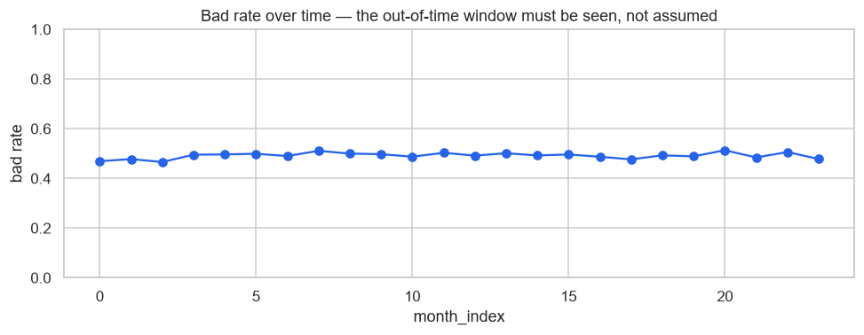
Bad rate by period. The out-of-time window sits at the right.
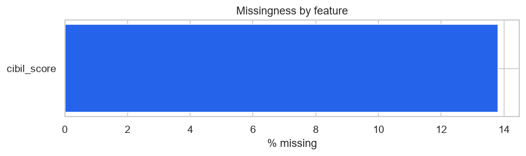
Missing by feature. Missing is never imputed — it becomes its own WOE bin.
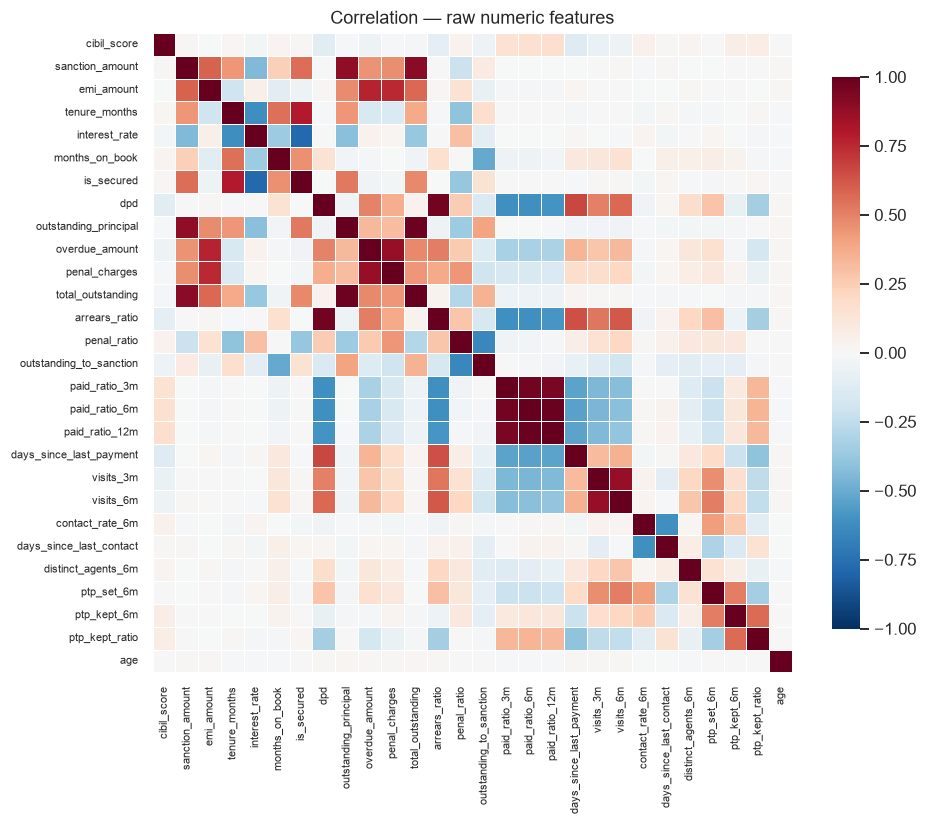
Raw numeric correlation.
| feature | type | n | missing_pct | unique | mean | std | p1 | p50 | p99 | mode | mode_share |
|---|---|---|---|---|---|---|---|---|---|---|---|
| cibil_score | numeric | 40,604 | 13.8100 | 450 | 626.2629 | 76.7388 | 453.0000 | 626.0000 | 804.0000 | ||
| sanction_amount | numeric | 40,604 | 0.0000 | 472 | 77,342.2569 | 92,677.8871 | 15,000.0000 | 46,000.0000 | 464,000.0000 | ||
| emi_amount | numeric | 40,604 | 0.0000 | 4,094 | 2,211.8765 | 2,174.6183 | 333.0000 | 1,528.5000 | 10,940.0000 | ||
| tenure_months | numeric | 40,604 | 0.0000 | 10 | 63.9846 | 64.3326 | 12.0000 | 36.0000 | 240.0000 | ||
| interest_rate | numeric | 40,604 | 0.0000 | 1,704 | 14.3793 | 4.3881 | 7.0000 | 14.6200 | 23.7800 | ||
| months_on_book | numeric | 40,604 | 0.0000 | 248 | 25.1524 | 34.7213 | 2.0000 | 12.0000 | 179.0000 | ||
| is_secured | numeric | 40,604 | 0.0000 | 2 | 0.3318 | 0.4709 | 0.0000 | 0.0000 | 1.0000 | ||
| dpd | numeric | 40,604 | 0.0000 | 483 | 104.0147 | 80.2010 | 0.0000 | 90.0000 | 347.0000 | ||
| outstanding_principal | numeric | 40,604 | 0.0000 | 19,257 | 51,845.0445 | 74,836.6739 | 2,156.8000 | 27,061.0000 | 361,132.8150 | ||
| overdue_amount | numeric | 40,604 | 0.0000 | 18,027 | 9,583.4398 | 13,137.2764 | 531.0000 | 5,609.0000 | 61,461.1400 | ||
| penal_charges | numeric | 40,604 | 0.0000 | 1,660 | 236.6372 | 333.3902 | 15.0000 | 138.0000 | 1,509.9700 | ||
| total_outstanding | numeric | 40,604 | 0.0000 | 39,015 | 61,665.1215 | 80,140.8785 | 5,424.2135 | 36,043.5000 | 391,453.9465 | ||
| arrears_ratio | numeric | 40,604 | 0.0000 | 9,383 | 4.2967 | 2.6515 | 0.9160 | 3.8330 | 12.2279 | ||
| penal_ratio | numeric | 40,604 | 0.0000 | 468 | 0.0057 | 0.0061 | 0.0003 | 0.0040 | 0.0279 | ||
| outstanding_to_sanction | numeric | 40,604 | 0.0000 | 995 | 0.6431 | 0.2628 | 0.0760 | 0.6860 | 0.9910 | ||
| paid_ratio_3m | numeric | 40,604 | 0.0000 | 991 | 0.2183 | 0.2740 | 0.0000 | 0.0800 | 1.0000 | ||
| paid_ratio_6m | numeric | 40,604 | 0.0000 | 994 | 0.2380 | 0.2653 | 0.0000 | 0.1380 | 1.0000 | ||
| paid_ratio_12m | numeric | 40,604 | 0.0000 | 994 | 0.2463 | 0.2622 | 0.0000 | 0.1570 | 1.0000 | ||
| days_since_last_payment | numeric | 40,604 | 0.0000 | 470 | 88.4103 | 78.4577 | 1.0000 | 67.0000 | 335.9700 | ||
| visits_3m | numeric | 40,604 | 0.0000 | 4 | 1.4253 | 1.0863 | 0.0000 | 1.0000 | 3.0000 | ||
| visits_6m | numeric | 40,604 | 0.0000 | 7 | 2.1242 | 1.7799 | 0.0000 | 2.0000 | 6.0000 | ||
| contact_rate_6m | numeric | 40,604 | 0.0000 | 14 | 0.5058 | 0.3279 | 0.0000 | 0.4500 | 1.0000 | ||
| days_since_last_contact | numeric | 40,604 | 0.0000 | 424 | 67.2691 | 63.2250 | 1.0000 | 49.0000 | 294.0000 | ||
| distinct_agents_6m | numeric | 40,604 | 0.0000 | 5 | 1.2529 | 0.5330 | 1.0000 | 1.0000 | 3.0000 | ||
| ptp_set_6m | numeric | 40,604 | 0.0000 | 7 | 0.4537 | 0.7218 | 0.0000 | 0.0000 | 3.0000 | ||
| ptp_kept_6m | numeric | 40,604 | 0.0000 | 5 | 0.1293 | 0.3816 | 0.0000 | 0.0000 | 2.0000 | ||
| ptp_kept_ratio | numeric | 40,604 | 0.0000 | 9 | 0.4290 | 0.2710 | 0.0000 | 0.5000 | 1.0000 | ||
| age | numeric | 40,604 | 0.0000 | 50 | 38.2152 | 9.6649 | 21.0000 | 38.0000 | 62.0000 | ||
| loan_type | categorical | 40,604 | 0.0000 | 8 | PERSONAL | 0.2530 | |||||
| dpd_bucket | categorical | 40,604 | 0.0000 | 5 | NPA | 0.4644 | |||||
| city | categorical | 40,604 | 0.0000 | 5 | Delhi | 0.3002 | |||||
| employment_type | categorical | 40,604 | 0.0000 | 5 | SALARIED | 0.4451 | |||||
| branch_code | categorical | 40,604 | 0.0000 | 18 | BR015 | 0.0611 |
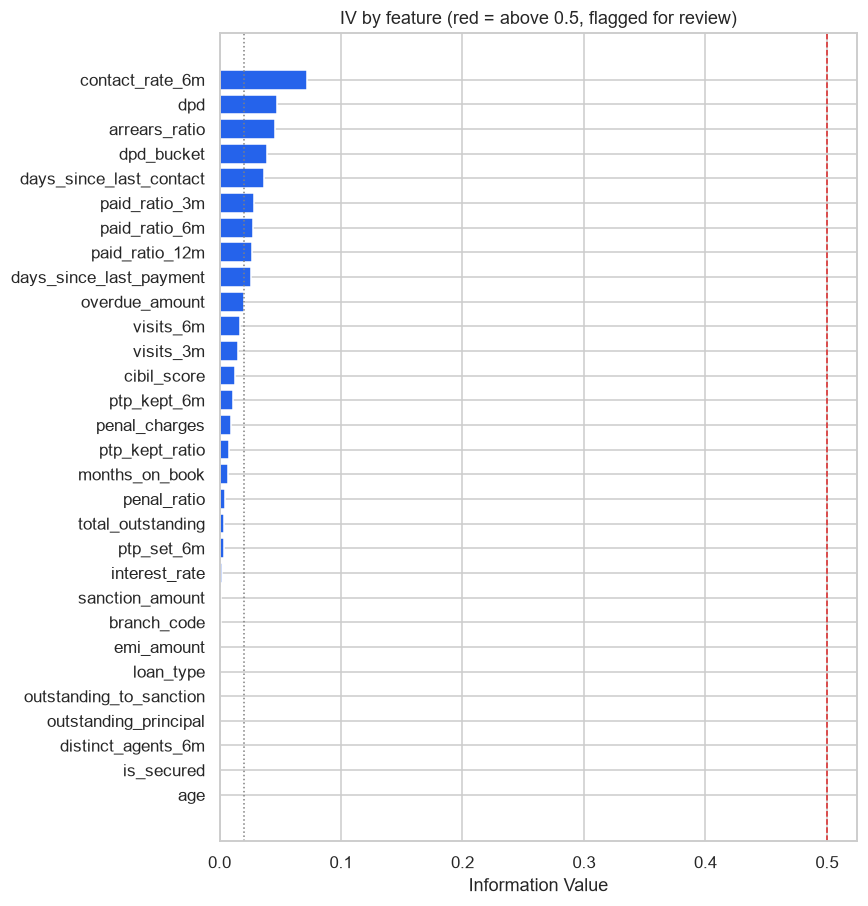
| feature | iv | strength | n_bins | monotonic | leakage_suspect |
|---|---|---|---|---|---|
| contact_rate_6m | 0.0719 | weak | 6 | True | False |
| dpd | 0.0472 | weak | 6 | True | False |
| arrears_ratio | 0.0454 | weak | 6 | True | False |
| dpd_bucket | 0.0388 | weak | 5 | True | False |
| days_since_last_contact | 0.0364 | weak | 6 | True | False |
| paid_ratio_3m | 0.0287 | weak | 6 | True | False |
| paid_ratio_6m | 0.0274 | weak | 6 | True | False |
| paid_ratio_12m | 0.0268 | weak | 6 | True | False |
| days_since_last_payment | 0.0261 | weak | 6 | True | False |
| overdue_amount | 0.0201 | weak | 6 | True | False |
| visits_6m | 0.0165 | unpredictive | 6 | True | False |
| visits_3m | 0.0150 | unpredictive | 4 | True | False |
| cibil_score | 0.0124 | unpredictive | 6 | True | False |
| ptp_kept_6m | 0.0109 | unpredictive | 2 | True | False |
| penal_charges | 0.0094 | unpredictive | 6 | True | False |
| ptp_kept_ratio | 0.0078 | unpredictive | 3 | True | False |
| months_on_book | 0.0070 | unpredictive | 6 | True | False |
| penal_ratio | 0.0044 | unpredictive | 6 | True | False |
| total_outstanding | 0.0035 | unpredictive | 5 | True | False |
| ptp_set_6m | 0.0034 | unpredictive | 3 | True | False |
| interest_rate | 0.0018 | unpredictive | 5 | True | False |
| sanction_amount | 0.0012 | unpredictive | 3 | True | False |
| branch_code | 0.0012 | unpredictive | 6 | True | False |
| emi_amount | 0.0007 | unpredictive | 4 | True | False |
| loan_type | 0.0007 | unpredictive | 6 | True | False |
| outstanding_to_sanction | 0.0005 | unpredictive | 6 | True | False |
| distinct_agents_6m | 0.0005 | unpredictive | 2 | True | False |
| outstanding_principal | 0.0005 | unpredictive | 4 | True | False |
| is_secured | 0.0005 | unpredictive | 2 | True | False |
| age | 0.0004 | unpredictive | 3 | True | False |
| city | 0.0003 | unpredictive | 5 | True | False |
| employment_type | 0.0001 | unpredictive | 5 | True | False |
| tenure_months | 0.0000 | unpredictive | 1 | True | False |
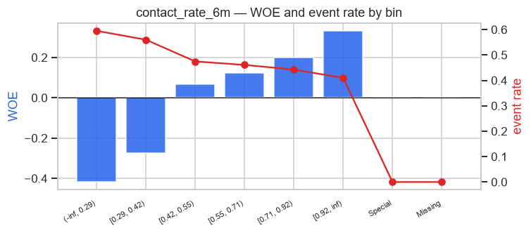
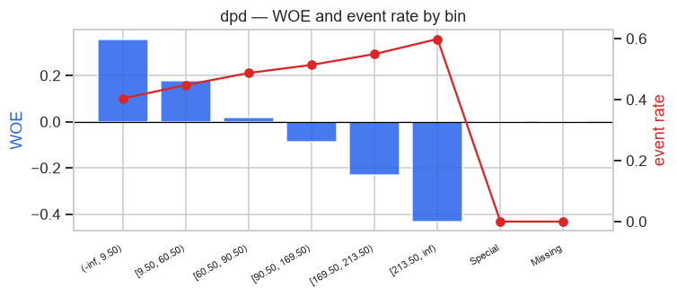
| feature | Bin | Count | Count (%) | Non-event | Event | Event rate | WoE | IV | JS |
|---|---|---|---|---|---|---|---|---|---|
| cibil_score | (-inf, 533.50) | 3,928 | 0.0967 | 1,783 | 2,145 | 0.5461 | -0.2172 | 0.0046 | 0.0006 |
| cibil_score | [533.50, 589.50) | 7,265 | 0.1789 | 3,528 | 3,737 | 0.5144 | -0.0899 | 0.0014 | 0.0002 |
| cibil_score | [589.50, 610.50) | 3,646 | 0.0898 | 1,811 | 1,835 | 0.5033 | -0.0455 | 0.0002 | 0.0000 |
| cibil_score | [610.50, 652.50) | 7,315 | 0.1802 | 3,806 | 3,509 | 0.4797 | 0.0489 | 0.0004 | 0.0001 |
| cibil_score | [652.50, 700.50) | 6,919 | 0.1704 | 3,609 | 3,310 | 0.4784 | 0.0542 | 0.0005 | 0.0001 |
| cibil_score | [700.50, inf) | 5,925 | 0.1459 | 3,288 | 2,637 | 0.4451 | 0.1883 | 0.0052 | 0.0006 |
| cibil_score | Special | 0 | 0.0000 | 0 | 0 | 0.0000 | 0.0000 | 0.0000 | 0.0000 |
| cibil_score | Missing | 5,606 | 0.1381 | 2,805 | 2,801 | 0.4996 | -0.0309 | 0.0001 | 0.0000 |
| cibil_score | 40,604 | 1.0000 | 20,630 | 19,974 | 0.4919 | 0.0124 | 0.0015 | ||
| sanction_amount | (-inf, 34500.00) | 15,161 | 0.3734 | 7,869 | 7,292 | 0.4810 | 0.0438 | 0.0007 | 0.0001 |
| sanction_amount | [34500.00, 179500.00) | 21,682 | 0.5340 | 10,900 | 10,782 | 0.4973 | -0.0214 | 0.0002 | 0.0000 |
| sanction_amount | [179500.00, inf) | 3,761 | 0.0926 | 1,861 | 1,900 | 0.5052 | -0.0531 | 0.0003 | 0.0000 |
| sanction_amount | Special | 0 | 0.0000 | 0 | 0 | 0.0000 | 0.0000 | 0.0000 | 0.0000 |
| sanction_amount | Missing | 0 | 0.0000 | 0 | 0 | 0.0000 | 0.0000 | 0.0000 | 0.0000 |
| sanction_amount | 40,604 | 1.0000 | 20,630 | 19,974 | 0.4919 | 0.0012 | 0.0002 | ||
| emi_amount | (-inf, 528.50) | 2,886 | 0.0711 | 1,400 | 1,486 | 0.5149 | -0.0919 | 0.0006 | 0.0001 |
| emi_amount | [528.50, 1032.50) | 9,823 | 0.2419 | 4,983 | 4,840 | 0.4927 | -0.0032 | 0.0000 | 0.0000 |
| emi_amount | [1032.50, 1858.50) | 11,403 | 0.2808 | 5,817 | 5,586 | 0.4899 | 0.0082 | 0.0000 | 0.0000 |
| emi_amount | [1858.50, inf) | 16,492 | 0.4062 | 8,430 | 8,062 | 0.4888 | 0.0123 | 0.0001 | 0.0000 |
| emi_amount | Special | 0 | 0.0000 | 0 | 0 | 0.0000 | 0.0000 | 0.0000 | 0.0000 |
| emi_amount | Missing | 0 | 0.0000 | 0 | 0 | 0.0000 | 0.0000 | 0.0000 | 0.0000 |
| emi_amount | 40,604 | 1.0000 | 20,630 | 19,974 | 0.4919 | 0.0007 | 0.0001 | ||
| tenure_months | (-inf, inf) | 40,604 | 1.0000 | 20,630 | 19,974 | 0.4919 | -0.0000 | 0.0000 | 0.0000 |
| tenure_months | Special | 0 | 0.0000 | 0 | 0 | 0.0000 | 0.0000 | 0.0000 | 0.0000 |
| tenure_months | Missing | 0 | 0.0000 | 0 | 0 | 0.0000 | 0.0000 | 0.0000 | 0.0000 |
| tenure_months | 40,604 | 1.0000 | 20,630 | 19,974 | 0.4919 | 0.0000 | 0.0000 | ||
| interest_rate | (-inf, 8.47) | 3,586 | 0.0883 | 1,741 | 1,845 | 0.5145 | -0.0903 | 0.0007 | 0.0001 |
| interest_rate | [8.47, 9.66) | 4,113 | 0.1013 | 2,014 | 2,099 | 0.5103 | -0.0737 | 0.0005 | 0.0001 |
| interest_rate | [9.66, 15.20) | 14,412 | 0.3549 | 7,335 | 7,077 | 0.4910 | 0.0035 | 0.0000 | 0.0000 |
| interest_rate | [15.20, 17.45) | 7,175 | 0.1767 | 3,682 | 3,493 | 0.4868 | 0.0204 | 0.0001 | 0.0000 |
| interest_rate | [17.45, inf) | 11,318 | 0.2787 | 5,858 | 5,460 | 0.4824 | 0.0380 | 0.0004 | 0.0001 |
| interest_rate | Special | 0 | 0.0000 | 0 | 0 | 0.0000 | 0.0000 | 0.0000 | 0.0000 |
| interest_rate | Missing | 0 | 0.0000 | 0 | 0 | 0.0000 | 0.0000 | 0.0000 | 0.0000 |
| interest_rate | 40,604 | 1.0000 | 20,630 | 19,974 | 0.4919 | 0.0018 | 0.0002 | ||
| months_on_book | (-inf, 4.50) | 3,891 | 0.0958 | 2,173 | 1,718 | 0.4415 | 0.2026 | 0.0039 | 0.0005 |
| months_on_book | [4.50, 7.50) | 7,211 | 0.1776 | 3,806 | 3,405 | 0.4722 | 0.0790 | 0.0011 | 0.0001 |
| months_on_book | [7.50, 8.50) | 2,447 | 0.0603 | 1,240 | 1,207 | 0.4933 | -0.0053 | 0.0000 | 0.0000 |
| months_on_book | [8.50, 17.50) | 12,246 | 0.3016 | 6,124 | 6,122 | 0.4999 | -0.0320 | 0.0003 | 0.0000 |
| months_on_book | [17.50, 45.50) | 9,178 | 0.2260 | 4,550 | 4,628 | 0.5042 | -0.0493 | 0.0005 | 0.0001 |
| months_on_book | [45.50, inf) | 5,631 | 0.1387 | 2,737 | 2,894 | 0.5139 | -0.0881 | 0.0011 | 0.0001 |
| months_on_book | Special | 0 | 0.0000 | 0 | 0 | 0.0000 | 0.0000 | 0.0000 | 0.0000 |
| months_on_book | Missing | 0 | 0.0000 | 0 | 0 | 0.0000 | 0.0000 | 0.0000 | 0.0000 |
| months_on_book | 40,604 | 1.0000 | 20,630 | 19,974 | 0.4919 | 0.0070 | 0.0009 | ||
| is_secured | (-inf, 0.50) | 27,133 | 0.6682 | 13,890 | 13,243 | 0.4881 | 0.0154 | 0.0002 | 0.0000 |
| is_secured | [0.50, inf) | 13,471 | 0.3318 | 6,740 | 6,731 | 0.4997 | -0.0310 | 0.0003 | 0.0000 |
| is_secured | Special | 0 | 0.0000 | 0 | 0 | 0.0000 | 0.0000 | 0.0000 | 0.0000 |
| is_secured | Missing | 0 | 0.0000 | 0 | 0 | 0.0000 | 0.0000 | 0.0000 | 0.0000 |
| is_secured | 40,604 | 1.0000 | 20,630 | 19,974 | 0.4919 | 0.0005 | 0.0001 | ||
| dpd | (-inf, 9.50) | 4,379 | 0.1078 | 2,611 | 1,768 | 0.4037 | 0.3576 | 0.0136 | 0.0017 |
| dpd | [9.50, 60.50) | 10,820 | 0.2665 | 5,973 | 4,847 | 0.4480 | 0.1766 | 0.0083 | 0.0010 |
| dpd | [60.50, 90.50) | 6,550 | 0.1613 | 3,357 | 3,193 | 0.4875 | 0.0178 | 0.0001 | 0.0000 |
| dpd | [90.50, 169.50) | 10,926 | 0.2691 | 5,311 | 5,615 | 0.5139 | -0.0880 | 0.0021 | 0.0003 |
| dpd | [169.50, 213.50) | 3,987 | 0.0982 | 1,796 | 2,191 | 0.5495 | -0.2311 | 0.0052 | 0.0007 |
| dpd | [213.50, inf) | 3,942 | 0.0971 | 1,582 | 2,360 | 0.5987 | -0.4323 | 0.0179 | 0.0022 |
| dpd | Special | 0 | 0.0000 | 0 | 0 | 0.0000 | 0.0000 | 0.0000 | 0.0000 |
| dpd | Missing | 0 | 0.0000 | 0 | 0 | 0.0000 | 0.0000 | 0.0000 | 0.0000 |
| dpd | 40,604 | 1.0000 | 20,630 | 19,974 | 0.4919 | 0.0472 | 0.0059 | ||
| outstanding_principal | (-inf, 9800.35) | 5,900 | 0.1453 | 3,070 | 2,830 | 0.4797 | 0.0491 | 0.0003 | 0.0000 |
| outstanding_principal | [9800.35, 29826.75) | 15,870 | 0.3908 | 8,074 | 7,796 | 0.4912 | 0.0027 | 0.0000 | 0.0000 |
| outstanding_principal | [29826.75, 121471.28) | 14,828 | 0.3652 | 7,476 | 7,352 | 0.4958 | -0.0156 | 0.0001 | 0.0000 |
| outstanding_principal | [121471.28, inf) | 4,006 | 0.0987 | 2,010 | 1,996 | 0.4983 | -0.0253 | 0.0001 | 0.0000 |
| outstanding_principal | Special | 0 | 0.0000 | 0 | 0 | 0.0000 | 0.0000 | 0.0000 | 0.0000 |
| outstanding_principal | Missing | 0 | 0.0000 | 0 | 0 | 0.0000 | 0.0000 | 0.0000 | 0.0000 |
| outstanding_principal | 40,604 | 1.0000 | 20,630 | 19,974 | 0.4919 | 0.0005 | 0.0001 | ||
| overdue_amount | (-inf, 1766.50) | 5,472 | 0.1348 | 3,055 | 2,417 | 0.4417 | 0.2019 | 0.0055 | 0.0007 |
| overdue_amount | [1766.50, 3296.50) | 6,983 | 0.1720 | 3,743 | 3,240 | 0.4640 | 0.1120 | 0.0022 | 0.0003 |
| overdue_amount | [3296.50, 6849.50) | 10,981 | 0.2704 | 5,722 | 5,259 | 0.4789 | 0.0521 | 0.0007 | 0.0001 |
| overdue_amount | [6849.50, 9870.00) | 5,279 | 0.1300 | 2,634 | 2,645 | 0.5010 | -0.0365 | 0.0002 | 0.0000 |
| overdue_amount | [9870.00, 25152.00) | 8,856 | 0.2181 | 4,152 | 4,704 | 0.5312 | -0.1571 | 0.0054 | 0.0007 |
| overdue_amount | [25152.00, inf) | 3,033 | 0.0747 | 1,324 | 1,709 | 0.5635 | -0.2876 | 0.0061 | 0.0008 |
showing 70 of 257 rows; the full table is in the CSV beside this document.
| step | kept | dropped | dropped_features | reason |
|---|---|---|---|---|
| iv_filter | 10 | 23 | ['cibil_score', 'sanction_amount', 'emi_amount', 'tenure_months', 'interest_rate', 'months_on_book', 'is_secured', 'outstanding_principal', 'penal_charges', 'total_outstanding', 'penal_ratio', 'outstanding_to_sanction', 'visits_3m', 'visits_6m', 'distinct_agents_6m', 'ptp_set_6m', 'ptp_kept_6m', 'ptp_kept_ratio', 'age', 'loan_type', 'city', 'employment_type', 'branch_code'] | IV outside [0.02, 0.8]; 0 flagged for review above 0.5 |
| correlation | 6 | 4 | ['arrears_ratio', 'dpd_bucket', 'paid_ratio_6m', 'paid_ratio_12m'] | |r| > 0.7; the lower-IV member of each pair goes |
| vif | 6 | 0 | [] | VIF > 5.0, dropped one at a time worst-first |
| sfs | 2 | 4 | ['overdue_amount', 'paid_ratio_3m', 'days_since_last_payment', 'days_since_last_contact'] | forward stepwise, stop when validation Gini gain < 0.0008 |
| sign_check | 2 | 0 | [] | every WOE coefficient must be negative (high WOE = low risk) |
| dropped | kept | abs_corr | iv_dropped | iv_kept |
|---|---|---|---|---|
| arrears_ratio | dpd | 0.9194 | 0.0454 | 0.0472 |
| dpd_bucket | dpd | 0.8966 | 0.0388 | 0.0472 |
| paid_ratio_6m | paid_ratio_3m | 0.9208 | 0.0274 | 0.0287 |
| paid_ratio_12m | paid_ratio_3m | 0.9143 | 0.0268 | 0.0287 |
| feature | vif | action |
|---|---|---|
| dpd | 2.5090 | kept |
| overdue_amount | 1.5130 | kept |
| paid_ratio_3m | 2.1730 | kept |
| days_since_last_payment | 1.9570 | kept |
| contact_rate_6m | 1.6030 | kept |
| days_since_last_contact | 1.5750 | kept |
| step | candidate | gini | gain | action |
|---|---|---|---|---|
| 1 | contact_rate_6m | 0.1604 | 0.1604 | added |
| 2 | dpd | 0.1972 | 0.0369 | added |
| 3 | days_since_last_contact | 0.1970 | -0.0003 | stopped |
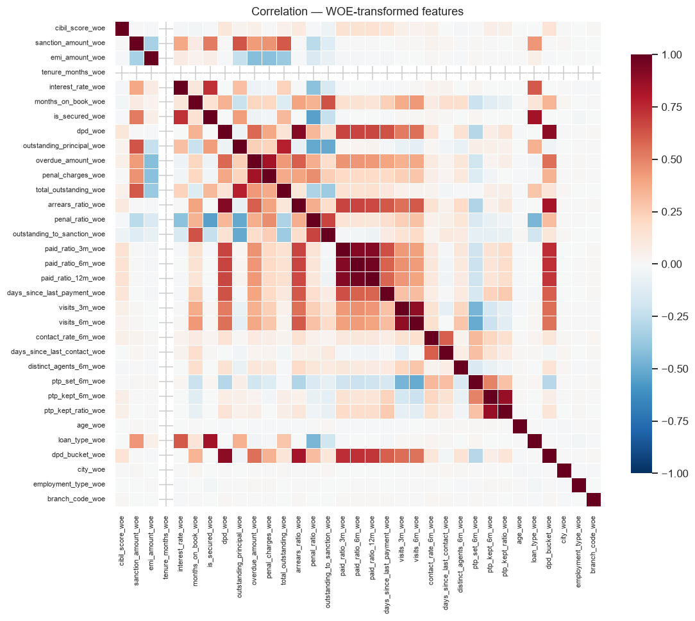
WOE-space correlation after transformation.
Scaled at PDO 20, base score 600 at 50.0:1 odds (factor 28.853901, offset 487.122876). Points read higher = safer, the way a bureau score does, while the model’s probability reads higher = riskier. They are monotonic inverses; every evaluation below uses the probability.
| band | count | bad_rate | min_points | max_points |
|---|---|---|---|---|
| A | 8,009 | 0.3922 | 497 | 506 |
| B | 8,667 | 0.4444 | 494 | 495 |
| C | 7,765 | 0.4792 | 488 | 493 |
| D | 10,088 | 0.5361 | 477 | 487 |
| E | 6,075 | 0.6341 | 466 | 475 |
| feature | bin | count | event_rate | woe | coefficient | points |
|---|---|---|---|---|---|---|
| contact_rate_6m | (-inf, 0.29) | 9,071 | 0.5952 | -0.4178 | -0.9116 | 233 |
| contact_rate_6m | [0.29, 0.42) | 3,110 | 0.5601 | -0.2740 | -0.9116 | 237 |
| contact_rate_6m | [0.42, 0.55) | 14,626 | 0.4747 | 0.0690 | -0.9116 | 246 |
| contact_rate_6m | [0.55, 0.71) | 3,280 | 0.4610 | 0.1241 | -0.9116 | 247 |
| contact_rate_6m | [0.71, 0.92) | 2,061 | 0.4425 | 0.1987 | -0.9116 | 249 |
| contact_rate_6m | [0.92, inf) | 8,456 | 0.4099 | 0.3321 | -0.9116 | 253 |
| contact_rate_6m | Special | 0 | 0.0000 | 0.0000 | -0.9116 | 244 |
| contact_rate_6m | Missing | 0 | 0.0000 | 0.0000 | -0.9116 | 244 |
| dpd | (-inf, 9.50) | 4,379 | 0.4037 | 0.3576 | -0.8565 | 253 |
| dpd | [9.50, 60.50) | 10,820 | 0.4480 | 0.1766 | -0.8565 | 248 |
| dpd | [60.50, 90.50) | 6,550 | 0.4875 | 0.0178 | -0.8565 | 244 |
| dpd | [90.50, 169.50) | 10,926 | 0.5139 | -0.0880 | -0.8565 | 242 |
| dpd | [169.50, 213.50) | 3,987 | 0.5495 | -0.2311 | -0.8565 | 238 |
| dpd | [213.50, inf) | 3,942 | 0.5987 | -0.4323 | -0.8565 | 233 |
| dpd | Special | 0 | 0.0000 | 0.0000 | -0.8565 | 244 |
| dpd | Missing | 0 | 0.0000 | 0.0000 | -0.8565 | 244 |
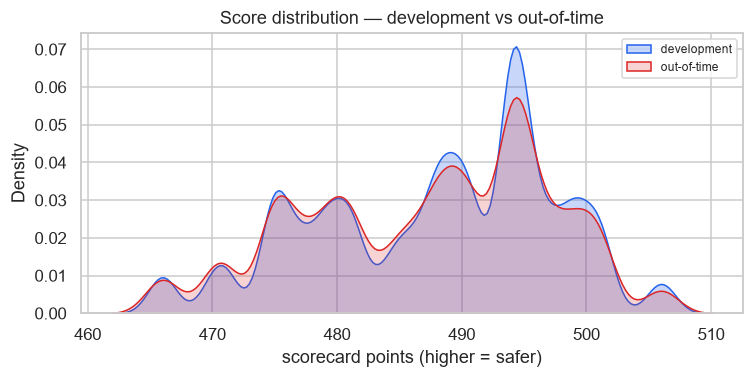
| Sample | n | Bad rate | Gini | KS | Top-decile lift | Breaks |
|---|---|---|---|---|---|---|
| Train | 40,604 | 0.4919 | 0.1824 | 13.73 | 1.32 | 0 |
| Validation | 11,435 | 0.4882 | 0.1972 | 14.56 | 1.33 | 1 |
| Out-of-time | 17,554 | 0.4940 | 0.1904 | 14.25 | 1.35 | 0 |
| Challenger (GBM, oot) | 17,554 | 0.4940 | 0.1966 | 14.80 | 1.35 | 1 |
| decile | count | events | non_events | bad_rate | lift | min_score | max_score | mean_score | cum_events | cum_count | cum_bad_rate | cum_pct_events | cum_pct_non_events | ks | woe |
|---|---|---|---|---|---|---|---|---|---|---|---|---|---|---|---|
| 1.0000 | 1,756.0000 | 1,172.0000 | 584.0000 | 0.6674 | 1.3512 | 0.6045 | 0.6724 | 0.6410 | 1,172.0000 | 1,756.0000 | 0.6674 | 0.1352 | 0.0657 | 6.9420 | -0.7207 |
| 2.0000 | 1,755.0000 | 1,057.0000 | 698.0000 | 0.6023 | 1.2193 | 0.5826 | 0.6045 | 0.5967 | 2,229.0000 | 3,511.0000 | 0.6349 | 0.2571 | 0.1443 | 11.2743 | -0.4391 |
| 3.0000 | 1,756.0000 | 950.0000 | 806.0000 | 0.5410 | 1.0952 | 0.5492 | 0.5826 | 0.5645 | 3,179.0000 | 5,267.0000 | 0.6036 | 0.3666 | 0.2351 | 13.1569 | -0.1885 |
| 4.0000 | 1,755.0000 | 894.0000 | 861.0000 | 0.5094 | 1.0313 | 0.5106 | 0.5492 | 0.5306 | 4,073.0000 | 7,022.0000 | 0.5800 | 0.4697 | 0.3320 | 13.7744 | -0.0618 |
| 5.0000 | 1,755.0000 | 891.0000 | 864.0000 | 0.5077 | 1.0278 | 0.4826 | 0.5106 | 0.4956 | 4,964.0000 | 8,777.0000 | 0.5656 | 0.5725 | 0.4292 | 14.3236 | -0.0549 |
| 6.0000 | 1,756.0000 | 789.0000 | 967.0000 | 0.4493 | 0.9096 | 0.4656 | 0.4826 | 0.4724 | 5,753.0000 | 10,533.0000 | 0.5462 | 0.6635 | 0.5381 | 12.5369 | 0.1793 |
| 7.0000 | 1,755.0000 | 776.0000 | 979.0000 | 0.4422 | 0.8951 | 0.4388 | 0.4656 | 0.4416 | 6,529.0000 | 12,288.0000 | 0.5313 | 0.7530 | 0.6483 | 10.4653 | 0.2082 |
| 8.0000 | 1,756.0000 | 749.0000 | 1,007.0000 | 0.4265 | 0.8635 | 0.4264 | 0.4388 | 0.4369 | 7,278.0000 | 14,044.0000 | 0.5182 | 0.8393 | 0.7617 | 7.7670 | 0.2718 |
| 9.0000 | 1,755.0000 | 712.0000 | 1,043.0000 | 0.4057 | 0.8213 | 0.4010 | 0.4264 | 0.4103 | 7,990.0000 | 15,799.0000 | 0.5057 | 0.9215 | 0.8791 | 4.2367 | 0.3576 |
| 10.0000 | 1,755.0000 | 681.0000 | 1,074.0000 | 0.3880 | 0.7856 | 0.3450 | 0.4010 | 0.3774 | 8,671.0000 | 17,554.0000 | 0.4940 | 1.0000 | 1.0000 | 0.0000 | 0.4314 |
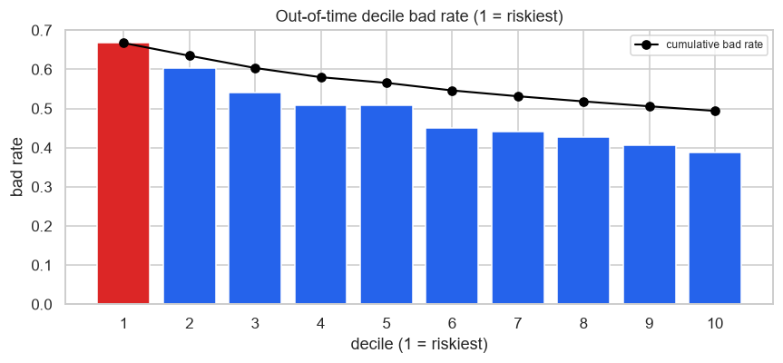
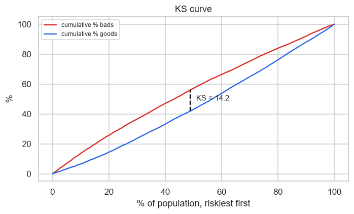
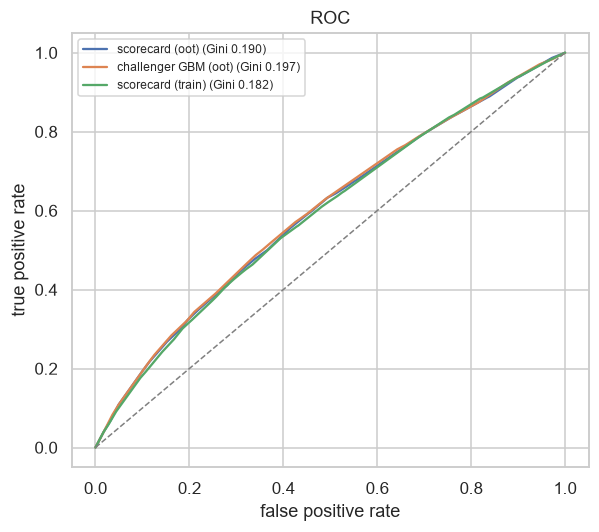
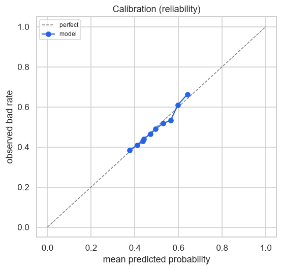
| band | count | observed | predicted | gap |
|---|---|---|---|---|
| 1.0000 | 1,756.0000 | 0.3850 | 0.3774 | -0.0076 |
| 2.0000 | 1,755.0000 | 0.4080 | 0.4103 | 0.0023 |
| 3.0000 | 1,756.0000 | 0.4282 | 0.4369 | 0.0087 |
| 4.0000 | 1,755.0000 | 0.4405 | 0.4416 | 0.0012 |
| 5.0000 | 1,755.0000 | 0.4650 | 0.4724 | 0.0075 |
| 6.0000 | 1,756.0000 | 0.4903 | 0.4956 | 0.0053 |
| 7.0000 | 1,755.0000 | 0.5185 | 0.5306 | 0.0121 |
| 8.0000 | 1,756.0000 | 0.5325 | 0.5645 | 0.0321 |
| 9.0000 | 1,755.0000 | 0.6091 | 0.5968 | -0.0124 |
| 10.0000 | 1,755.0000 | 0.6627 | 0.6410 | -0.0217 |
| decile | count | events | non_events | bad_rate | lift | min_score | max_score | mean_score | cum_events | cum_count | cum_bad_rate | cum_pct_events | cum_pct_non_events | ks | woe |
|---|---|---|---|---|---|---|---|---|---|---|---|---|---|---|---|
| 1.0000 | 4,061.0000 | 2,628.0000 | 1,433.0000 | 0.6471 | 1.3155 | 0.6045 | 0.6724 | 0.6361 | 2,628.0000 | 4,061.0000 | 0.6471 | 0.1316 | 0.0695 | 6.2109 | -0.6388 |
| 2.0000 | 4,060.0000 | 2,400.0000 | 1,660.0000 | 0.5911 | 1.2017 | 0.5728 | 0.6045 | 0.5923 | 5,028.0000 | 8,121.0000 | 0.6191 | 0.2517 | 0.1499 | 10.1800 | -0.4010 |
| 3.0000 | 4,061.0000 | 2,208.0000 | 1,853.0000 | 0.5437 | 1.1053 | 0.5492 | 0.5728 | 0.5592 | 7,236.0000 | 12,182.0000 | 0.5940 | 0.3623 | 0.2397 | 12.2523 | -0.2076 |
| 4.0000 | 4,060.0000 | 2,058.0000 | 2,002.0000 | 0.5069 | 1.0304 | 0.4951 | 0.5492 | 0.5183 | 9,294.0000 | 16,242.0000 | 0.5722 | 0.4653 | 0.3368 | 12.8514 | -0.0599 |
| 5.0000 | 4,060.0000 | 2,014.0000 | 2,046.0000 | 0.4961 | 1.0084 | 0.4725 | 0.4951 | 0.4897 | 11,308.0000 | 20,302.0000 | 0.5570 | 0.5661 | 0.4360 | 13.0169 | -0.0166 |
| 6.0000 | 4,061.0000 | 1,866.0000 | 2,195.0000 | 0.4595 | 0.9341 | 0.4388 | 0.4725 | 0.4643 | 13,174.0000 | 24,363.0000 | 0.5407 | 0.6596 | 0.5424 | 11.7192 | 0.1301 |
| 7.0000 | 4,060.0000 | 1,845.0000 | 2,215.0000 | 0.4544 | 0.9238 | 0.4388 | 0.4388 | 0.4388 | 15,019.0000 | 28,423.0000 | 0.5284 | 0.7519 | 0.6497 | 10.2194 | 0.1505 |
| 8.0000 | 4,061.0000 | 1,775.0000 | 2,286.0000 | 0.4371 | 0.8885 | 0.4264 | 0.4388 | 0.4361 | 16,794.0000 | 32,484.0000 | 0.5170 | 0.8408 | 0.7605 | 8.0250 | 0.2207 |
| 9.0000 | 4,060.0000 | 1,650.0000 | 2,410.0000 | 0.4064 | 0.8262 | 0.4010 | 0.4264 | 0.4081 | 18,444.0000 | 36,544.0000 | 0.5047 | 0.9234 | 0.8774 | 4.6037 | 0.3465 |
| 10.0000 | 4,060.0000 | 1,530.0000 | 2,530.0000 | 0.3768 | 0.7661 | 0.3450 | 0.4010 | 0.3765 | 19,974.0000 | 40,604.0000 | 0.4919 | 1.0000 | 1.0000 | 0.0000 | 0.4706 |
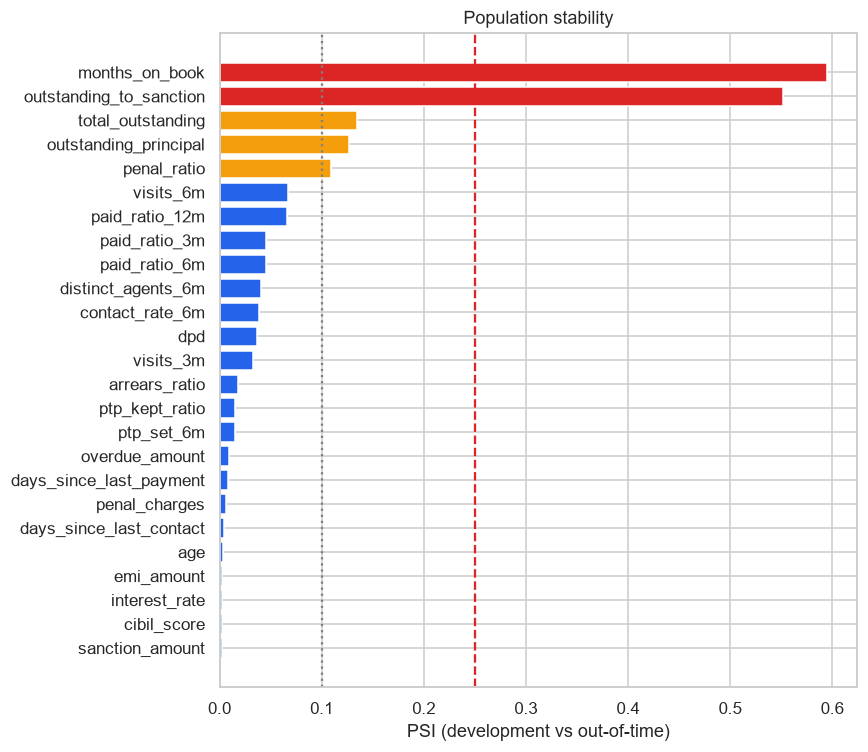
| feature | psi | verdict | in_model |
|---|---|---|---|
| months_on_book | 0.5948 | shifted | False |
| outstanding_to_sanction | 0.5513 | shifted | False |
| total_outstanding | 0.1351 | watch | False |
| outstanding_principal | 0.1270 | watch | False |
| penal_ratio | 0.1088 | watch | False |
| visits_6m | 0.0670 | stable | False |
| paid_ratio_12m | 0.0657 | stable | False |
| paid_ratio_6m | 0.0459 | stable | False |
| paid_ratio_3m | 0.0459 | stable | False |
| distinct_agents_6m | 0.0402 | stable | False |
| contact_rate_6m | 0.0385 | stable | True |
| dpd | 0.0363 | stable | True |
| visits_3m | 0.0325 | stable | False |
| arrears_ratio | 0.0185 | stable | False |
| ptp_kept_ratio | 0.0148 | stable | False |
| ptp_set_6m | 0.0148 | stable | False |
| overdue_amount | 0.0088 | stable | False |
| days_since_last_payment | 0.0082 | stable | False |
| penal_charges | 0.0068 | stable | False |
| days_since_last_contact | 0.0041 | stable | False |
| age | 0.0036 | stable | False |
| emi_amount | 0.0028 | stable | False |
| cibil_score | 0.0025 | stable | False |
| interest_rate | 0.0025 | stable | False |
| sanction_amount | 0.0023 | stable | False |
| tenure_months | 0.0008 | stable | False |
| ptp_kept_6m | 0.0007 | stable | False |
| is_secured | 0.0000 | stable | False |
| loan_type | shifted | False | |
| dpd_bucket | shifted | False |
showing 30 of 33 rows; the full table is in the CSV beside this document.
Score PSI, development against out-of-time: 0.0047.
| dimension | segment | n | bad_rate | gini | gated |
|---|---|---|---|---|---|
| dpd_bucket | NPA | 8,605 | 0.5406 | 0.2008 | False |
| dpd_bucket | BUCKET_2 | 3,415 | 0.4545 | 0.0731 | False |
| dpd_bucket | BUCKET_3 | 2,698 | 0.4774 | 0.1622 | False |
| dpd_bucket | CURRENT | 1,446 | 0.4142 | 0.1153 | False |
| dpd_bucket | BUCKET_1 | 1,390 | 0.4173 | 0.1075 | False |
| loan_type | PERSONAL | 4,390 | 0.4895 | 0.1969 | True |
| loan_type | CREDIT_CARD | 2,582 | 0.5062 | 0.1787 | True |
| loan_type | AUTO | 2,309 | 0.4955 | 0.2170 | True |
| loan_type | BUSINESS | 2,169 | 0.4882 | 0.1735 | True |
| loan_type | GOLD | 1,985 | 0.4791 | 0.1360 | True |
| loan_type | HOME | 1,636 | 0.4835 | 0.2324 | True |
| loan_type | MICROFINANCE | 1,346 | 0.5119 | 0.1831 | True |
| loan_type | EDUCATION | 1,137 | 0.5110 | 0.2047 | True |
| city | Delhi | 5,338 | 0.4966 | 0.2071 | True |
| city | Gurugram | 4,274 | 0.4913 | 0.2036 | True |
| city | Noida | 3,927 | 0.4889 | 0.1784 | True |
| city | Faridabad | 2,126 | 0.4972 | 0.1526 | True |
| city | Ghaziabad | 1,889 | 0.4992 | 0.1793 | True |
| Bootstrap Gini (out-of-time) | 0.1904 95% CI [0.1741, 0.2052] over 300 resamples |
| Adversarial validation AUC | 0.7682 — different populations |
AUC near 0.5 means development and out-of-time look like the same book. Above 0.70 the out-of-time result is measuring transfer across a shift as much as it is measuring skill.
| feature | gini_real | gini_time_shuffled | retention | note |
|---|---|---|---|---|
| contact_rate_6m | 0.1347 | 0.0038 | 0.0280 | |
| dpd | 0.1217 | 0.0076 | 0.0630 |
| removed | gini | delta |
|---|---|---|
| contact_rate_6m | 0.1208 | -0.0696 |
| dpd | 0.1617 | -0.0287 |
| (none — full model) | 0.1904 | 0.0000 |
scripts/build_modelling_dataset.py
--sweep — and it was set to land in a realistic band, not discovered
there.